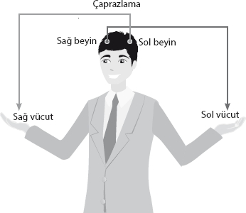
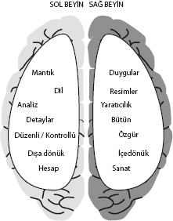
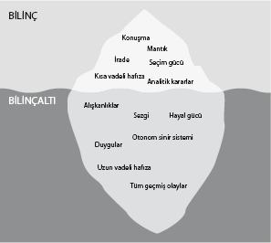

Beynimizin gizemlerinin henüz çözülemediğini hepimiz biliyoruz. Biz yine de beyin gibi “karmaşık”, “ucu bucağı” olmayan bir deryaya sadece bu kitabın anlaşılmasını daha kolay kılacak ölçüde bakacağız. Bunu yapmaktaki tek amacımız sonraki uygulamalarda neyi neden yaptığımızı daha iyi anlamak.

Sağ ve sol beyin
Beynin çok farklı bölümleri var elbette, ama en temel ayrım SAĞ ve SOL beyin olarak yapılıyor.
Sağ beyin, çapraz olarak vücudun sol tarafını, sol beyin ise sağ tarafını kontrol ediyor. Beynin bu iki tarafı, aşağıda görebileceğiniz görevleriyle, birbirleriyle zıt ama bir o kadar tamamlayıcılar.

Sol beyin analiz, mantık, dil, hesap gibi daha “sıkıcı” görevlerden sorumluyken, sağ beyin duygular, yaratıcılık, sanat, resim gibi birçok “eğlenceli” yönü kapsıyor.
Bunun dışında sağ ve sol beynin çok bilinmeyen iki farklı özelliği var.
Sağ beyin erkek, sol beyin kadın
Sağ beyin erkek, sol beyinse kadın olarak nitelendiriliyor. Yaşanılan çok kötü bir olayla, sağ beynin büyük bir travmanın etkisine girmesi kişide erkek hormonu olan “testosteronun” baskılanmasına sebep oluyor. Eğer travma sol beyinde gerçekleşirse, kadın hormonu olan “östrojen” baskılanıyor.
Yukarıda paylaştığım bu özellik aslında, insanların yaşadıkları büyük travmalara göre, daha erkeksi ya da kadınsı olabilmelerinin açıklamasını da içinde barındırıyor.
Sağ beyin depresif, sol beyin manik
Sağ ve sol beynin diğer özellikleri sağ beynin “depresif”, sol beyninse “manik” olması...
Zaten sağ beynin duygu, sanat, içine kapanıklık gibi yukarıda paylaştığımız özelliklerinden “nasıl kolayca depresyona” girebileceğini hayal etmek zor değil. Zira “depresif” insanların sanat ve yaratıcılık konusunda ne kadar başarılı oldukları da bilinen bir gerçek.
Sol beyinse duyguların olmadığı, her şeyin mantık çevresinde çözüldüğü, çok daha dışa dönük, sosyal ve “manik” tarafımız. Manik derken; aşırı neşeden, fikirden fikre uçmaktan, paranoyak (korku dolu) kuruntulardan, hiperaktiflikten, kendine aşırı güvenden, konsantrasyonun az bulunması gibi özelliklerden bahsediyorum.
Yukarıda beynin erkek ve kadın yönlerini anlattığımız şekilde, büyük bir travmanın sağ beyinde bulunması kişiyi “depresif” kılarken, sol lobdaki travmalar “manik” özellikleri ortaya çıkarıyor.
Söylediğim gibi, beyin bir derya, hatta okyanus. Şimdilik bu detaylı konuyu burada keselim ve aslında beynimizi neden kontrol edemediğimizi inceleyelim.
Bilinç ve bilinçaltı
Bilinç, beynimizin kullandığımız, kontrol ettiğimiz, aynı anda gerçekten farkında olarak tek bir konuyu düşünebilen, değerlendirebilen yönü. Ona çok aşinayız, zaten sadece onun farkındayız...
Bilinçaltı ise geriye kalan her şey. Duygularımızı oluşturan, vücudumuzda farkında olmadan kalbimizi çarptıran, kontrol etmediğimiz ama yaşamımız için tüm temel işlemleri gerçekleştiren yönümüz.

| Bilinç | Bilinçaltı |
| • İradeye dayalıdır. | • Alışkanlıklara dayalıdır. |
| • Mantıklıdır. | • Duygusaldır. |
| • Soyut kavramları değerlendirebilir. | • Sadece duyusal girdilerle çalışır (resim, ses, his, tat, koku). |
| • Bilgileri sırayla işler. Saniyede 2.000 bit bilgi işleyebilir. | • Çoklu işlem yapabilir. Tüm vücut işlemlerini aynı anda yürütür. Saniyede 4 milyar bit bilgi işler. |
| • Olumsuz kavramını anlar. | • Olumsuzluk kavramını anlamaz, işleyemez. Bir bilgi bilinçaltının dikkatindeyse o sadece vardır. |
| • Zaman kavramı vardır. Dün, bugün ve yarın arasındaki farkı bilir. | • Zaman kavramı yoktur. İşlediği her şeyi o an oluyormuş gibi varsayar. |
| • Kısa süreli bellektir | • Uzun süreli bellektir. |
| • Yeni tecrübeleri yaşamaya, öğrenmeye istekli ve heveslidir. | • Yeni tecrübelere kapalıdır. Güveni ön planda tutar. |
| • Farkındadır. | • Farkında değildir. |
| • Mizah anlayışına sahiptir. | • Mizah anlayışına sahip değildir. Ciddiye alınmaması gereken bilgileri de ciddiye alır. |
Bilinç ve bilinçaltının kapasitelerinin saniyede 2.000 bit ve 4 milyar bit olduğunu tabloda okudunuz. Rakamlar gerçekten de dile kolay. Çok basit bir bölme işlemiyle, bilinçaltının kapasitesinin bilincin 2 milyon katı olduğunu ve aralarındaki farkın benzetme yerindeyse İstanbul Boğazı ile bir musluktan akan su arasındaki fark kadar olduğunu söyleyelim.
Peki, bu büyük gücümüzü neden daha etkili bir şekilde kullanamıyoruz? Neden çok daha kapasitesiz olan “bilincimizle” baş başayız?
Aslında, ikisi beraber çalışmak zorunda...
Yine bir benzetmeden gidelim: Bilinç, işleme kapasitesi çok düşük ama çok zeki bir bilgeyken, bilinçaltı işleme kapasitesi çok yüksek ama değerlendirme kapasitesi olmayan bir bilgisayar gibidir. Ne verilirse onu işler.